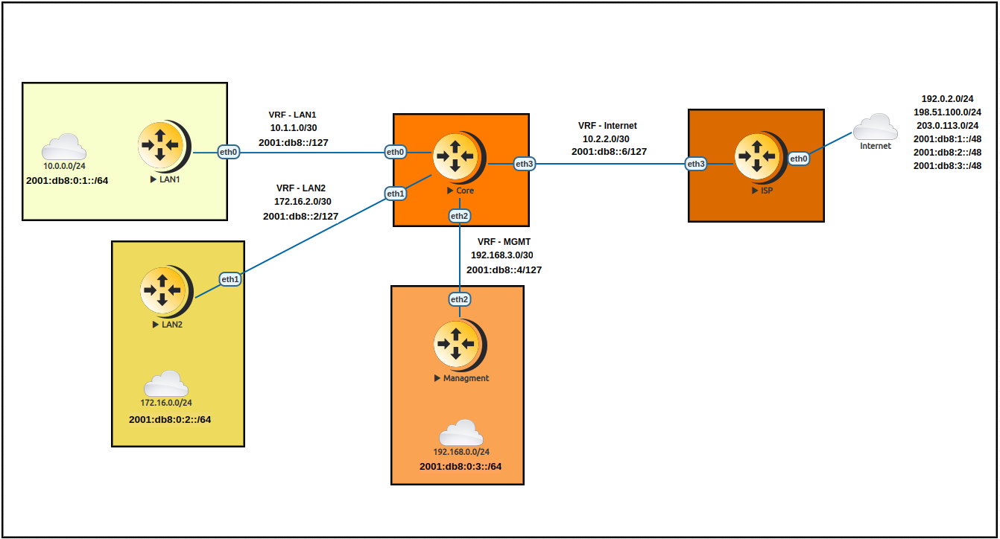

Inter-VRF Routing over VRF Lite
Virtual Routing and Forwarding is a technology that allow multiple instance of a routing table to exist within a single device. One of the key aspect of VRFs is that do not share the same routes or interfaces, therefore packets are forwarded between interfaces that belong to the same VRF only.
Any information related to a VRF is not exchanged between devices -or in the same device- by default, this is a technique called VRF-Lite.
Keep networks isolated is -in general- a good principle, but there are cases where you might need that some network can access other in a different VRF.
The scope of this document is to cover such cases in a dynamic way without the use of MPLS-LDP.
General information about L3VPNs can be found in the L3VPN VRFs chapter.
Overview
Let’s say we have a requirement to have multiple networks.
LAN 1
LAN 2
Management
Internet
Both LANs have to be able to route between each other, both will have managed devices through a dedicated management network and both will need Internet access yet the LAN2 will need access to some set of outside networks, not all. The management network will need access to both LANs but cannot have access to/from the outside.
This scenario could be a nightmare applying regular routing and might need filtering in multiple interfaces.
A simple solution could be using different routing tables, or VRFs for all the networks so we can keep the routing restrictions. But for us to route between the different VRFs we would need a cable or a logical connection between each other:
One cable/logical connection between LAN1 and LAN2
One cable/logical connection between LAN1 and Internet
One cable/logical connection between LAN2 and Internet
One cable/logical connection between LAN1 and Management
One cable/logical connection between LAN2 and Management
As we can see this is unpractical.
To address this scenario we will use to our advantage an extension of the BGP routing protocol that will help us in the “Export” between VRFs without the need for MPLS.
MP-BGP or MultiProtocol BGP introduces two main concepts to solve this limitation: - Route Distinguisher (RD): Is used to distinguish between different VRFs –called VPNs- inside the BGP Process. The RD is appended to each IPv4 Network that is advertised into BGP for that VPN making it a unique VPNv4 route. - Route Target (RT): This is an extended BGP community append to the VPNv4 route in the Import/Export process. When a route passes from the VRF routing table into the BGP process it will add the configured export extended community(ies) for that VPN. When that route needs to go from BGP into the VRF routing table will only pass if that given VPN import policy matches any of the appended community(ies) into that prefix.
Topology
{kind=link}
IP Schema
Device-A |
Device-B |
IPv4 Network |
IPv6 Network |
Core |
LAN1 |
10.1.1.0/30 |
2001:db8::/127 |
Core |
LAN2 |
172.16.2.0/30 |
2001:db8::2/127 |
Core |
Management |
192.168.3.0/30 |
2001:db8::4/127 |
Core |
ISP |
10.2.2.0/30 |
2001:db8::6/127 |
RD & RT Schema
VRF |
RD |
RT |
LAN1 |
64496:1 |
64496:1 |
LAN2 |
64496:2 |
64496:2 |
Management |
64496:50 |
64496:50 |
Internet |
64496:100 |
64496:100 |
Configurations
Note
We use a static route configuration in between the Core and each LAN and Management router, and BGP between the Core router and the ISP router but any dynamic routing protocol can be used.
Remote Networks
The following template configuration can be used in each remote router based in our topology.
# Interface Configuration
set interface eth eth<N> address <IP ADDRESS/CIDR>
# Static default route back to Core
set procotols static route 0.0.0.0/0 next-hop <CORE IP ADDRESS>
Core Router
Step 1: VRF and Configurations to remote networks
Configuration
Set the VRF name and Table ID, set interface address and bind it to the VRF. Last add the static route to the remote network.
# VRF name and table ID (MANDATORY)
set vrf name <VRF> table <ID>
# Interface Configuration
set interface eth eth<N> address <IP ADDRESS/CIDR>
# Assign interface to VRF
set interface eth eth<N> vrf <VRF>
# Static route to remote Network
set vrf name <VRF> protocols static route <NETWORK/CIDR> next-hop <REMOTE IP ADDRESS>
Verification
Checking the routing table of the VRF should reveal both static and connected entries active. A PING test between the Core and remote router is a way to validate connectivity within the VRF.
# show ip route vrf <VRF>
# show ipv6 route vrf <VRF>
vyos@Core:~$ show ip route vrf LAN1
Codes: K - kernel route, C - connected, S - static, R - RIP,
O - OSPF, I - IS-IS, B - BGP, E - EIGRP, N - NHRP,
T - Table, v - VNC, V - VNC-Direct, A - Babel, F - PBR,
f - OpenFabric,
> - selected route, * - FIB route, q - queued, r - rejected, b - backup
t - trapped, o - offload failure
VRF LAN1:
S>* 10.0.0.0/24 [1/0] via 10.1.1.2, eth0, weight 1, 00:05:41
C>* 10.1.1.0/30 is directly connected, eth0, 00:05:44
vyos@Core:~$ show ipv6 route vrf LAN1
Codes: K - kernel route, C - connected, S - static, R - RIPng,
O - OSPFv3, I - IS-IS, B - BGP, N - NHRP, T - Table,
v - VNC, V - VNC-Direct, A - Babel, F - PBR,
f - OpenFabric,
> - selected route, * - FIB route, q - queued, r - rejected, b - backup
t - trapped, o - offload failure
VRF LAN1:
C>* 2001:db8::/127 is directly connected, eth0, 00:18:43
S>* 2001:db8:0:1::/64 [1/0] via 2001:db8::1, eth0, weight 1, 00:16:03
C>* fe80::/64 is directly connected, eth0, 00:18:43
# ping <DESTINATION> vrf <VRF>
vyos@Core:~$ ping 10.1.1.2 vrf LAN1
PING 10.1.1.2 (10.1.1.2) 56(84) bytes of data.
64 bytes from 10.1.1.2: icmp_seq=1 ttl=64 time=1.52 ms
64 bytes from 10.1.1.2: icmp_seq=2 ttl=64 time=0.830 ms
^C
--- 10.1.1.2 ping statistics ---
2 packets transmitted, 2 received, 0% packet loss, time 1002ms
rtt min/avg/max/mdev = 0.830/1.174/1.518/0.344 ms
vyos@Core:~$ ping 10.0.0.1 vrf LAN1
PING 10.0.0.1 (10.0.0.1) 56(84) bytes of data.
64 bytes from 10.0.0.1: icmp_seq=1 ttl=64 time=0.785 ms
64 bytes from 10.0.0.1: icmp_seq=2 ttl=64 time=0.948 ms
^C
--- 10.0.0.1 ping statistics ---
2 packets transmitted, 2 received, 0% packet loss, time 1002ms
rtt min/avg/max/mdev = 0.785/0.866/0.948/0.081 ms
vyos@Core:~$ ping 2001:db8:0:1::1 vrf LAN1
PING 2001:db8:0:1::1(2001:db8:0:1::1) 56 data bytes
64 bytes from 2001:db8:0:1::1: icmp_seq=1 ttl=64 time=3.04 ms
64 bytes from 2001:db8:0:1::1: icmp_seq=2 ttl=64 time=1.04 ms
64 bytes from 2001:db8:0:1::1: icmp_seq=3 ttl=64 time=0.925 ms
^C
--- 2001:db8:0:1::1 ping statistics ---
3 packets transmitted, 3 received, 0% packet loss, time 2004ms
rtt min/avg/max/mdev = 0.925/1.665/3.035/0.969 ms
Step 2: BGP Configuration for VRF-Lite
Configuration
Setting BGP global local-as as well inside the VRF. Redistribute static routes to inject configured networks into the BGP process but still inside the VRF.
# set BGP global local-as
set protocols bgp system-as <ASN>
# set BGP VRF local-as and redistribution
set vrf name <VRF> protocols bgp system-as <ASN>
set vrf name <VRF> protocols bgp address-family <AF IPv4/IPv6> redistribute static
Verification
Check the BGP VRF table and verify if the static routes are injected showing the correct next-hop information.
# show ip bgp vrf <VRF>
# show bgp vrf <VRF> ipv6
vyos@Core:~$ show ip bgp vrf LAN1
BGP table version is 3, local router ID is 10.1.1.1, vrf id 8
Default local pref 100, local AS 64496
Status codes: s suppressed, d damped, h history, * valid, > best, = multipath,
i internal, r RIB-failure, S Stale, R Removed
Nexthop codes: @NNN nexthop's vrf id, < announce-nh-self
Origin codes: i - IGP, e - EGP, ? - incomplete
RPKI validation codes: V valid, I invalid, N Not found
Network Next Hop Metric LocPrf Weight Path
*> 10.0.0.0/24 10.1.1.2 0 32768 ?
vyos@Core# run show bgp vrf LAN1 ipv6
BGP table version is 13, local router ID is 10.1.1.1, vrf id 8
Default local pref 100, local AS 64496
Status codes: s suppressed, d damped, h history, * valid, > best, = multipath,
i internal, r RIB-failure, S Stale, R Removed
Nexthop codes: @NNN nexthop's vrf id, < announce-nh-self
Origin codes: i - IGP, e - EGP, ? - incomplete
RPKI validation codes: V valid, I invalid, N Not found
Network Next Hop Metric LocPrf Weight Path
*> 2001:db8:0:1::/64
2001:db8::1 0 32768 ?
Step 3: VPN Configuration
Configuration
Within the VRF we set the Route-Distinguisher (RD) and Route-Targets (RT), then we enable the export/import VPN.
# set Route-distinguisher
set vrf name <VRF> protocols bgp address-family <AF IPv4/IPv6> rd vpn export '<RD>'
# set route-target for import/export
# Note: RT are a list that can be more than one community between apostrophe
# and separated by blank space. Ex: '<RT:1> <RT:2> <RT:3>'
set vrf name <VRF> protocols bgp address-family <AF IPv4/IPv6> route-target vpn export '<RT:Export>'
set vrf name <VRF> protocols bgp address-family <AF IPv4/IPv6> route-target vpn import '<RT:Import>'
# Enable VPN export/import under this VRF
set vrf name <VRF> protocols bgp address-family <AF IPv4/IPv6> export vpn
set vrf name <VRF> protocols bgp address-family <AF IPv4/IPv6> import vpn
A key point to understand is that if we need two VRFs to communicate between each other EXPORT rt from VRF1 has to be in the IMPORT rt list from VRF2. But this is only in ONE direction, to complete the communication the EXPORT rt from VRF2 has to be in the IMPORT rt list from VRF1.
There are some cases where this is not needed -for example, in some DDoS appliance- but most inter-vrf routing designs use the above configurations.
Verification
After configured all the VRFs involved in this topology we take a deeper look at both BGP and Routing table for the VRF LAN1
# show ip bgp vrf <VRF>
# show bgp vrf <VRF> ipv6
vyos@Core# run show ip bgp vrf LAN1
BGP table version is 53, local router ID is 10.1.1.1, vrf id 8
Default local pref 100, local AS 64496
Status codes: s suppressed, d damped, h history, * valid, > best, = multipath,
i internal, r RIB-failure, S Stale, R Removed
Nexthop codes: @NNN nexthop's vrf id, < announce-nh-self
Origin codes: i - IGP, e - EGP, ? - incomplete
RPKI validation codes: V valid, I invalid, N Not found
Network Next Hop Metric LocPrf Weight Path
*> 0.0.0.0/0 10.2.2.2@7< 0 64497 i
*> 10.0.0.0/24 10.1.1.2 0 32768 ?
*> 10.2.2.0/30 10.2.2.2@7< 0 0 64497 ?
*> 192.0.2.0/24 10.2.2.2@7< 0 0 64497 ?
*> 192.168.0.0/24 192.168.3.2@11< 0 32768 ?
*> 198.51.100.0/24 10.2.2.2@7< 0 0 64497 ?
*> 203.0.113.0/24 10.2.2.2@7< 0 0 64497 ?
vyos@Core# run show bgp vrf LAN1 ipv6
BGP table version is 13, local router ID is 10.1.1.1, vrf id 8
Default local pref 100, local AS 64496
Status codes: s suppressed, d damped, h history, * valid, > best, = multipath,
i internal, r RIB-failure, S Stale, R Removed
Nexthop codes: @NNN nexthop's vrf id, < announce-nh-self
Origin codes: i - IGP, e - EGP, ? - incomplete
RPKI validation codes: V valid, I invalid, N Not found
Network Next Hop Metric LocPrf Weight Path
*> ::/0 fe80::5200:ff:fe02:3@7<
0 64497 i
*> 2001:db8::6/127 fe80::5200:ff:fe02:3@7<
0 0 64497 ?
*> 2001:db8:0:1::/64
2001:db8::1 0 32768 ?
*> 2001:db8:0:3::/64
2001:db8::5@11< 0 32768 ?
*> 2001:db8:1::/48 fe80::5200:ff:fe02:3@7<
0 0 64497 ?
*> 2001:db8:2::/48 fe80::5200:ff:fe02:3@7<
0 0 64497 ?
*> 2001:db8:3::/48 fe80::5200:ff:fe02:3@7<
0 0 64497 ?
# show ip route vrf <VRF>
# show ipv6 route vrf <VRF>
vyos@Core:~$ show ip route vrf LAN1
Codes: K - kernel route, C - connected, S - static, R - RIP,
O - OSPF, I - IS-IS, B - BGP, E - EIGRP, N - NHRP,
T - Table, v - VNC, V - VNC-Direct, A - Babel, F - PBR,
f - OpenFabric,
> - selected route, * - FIB route, q - queued, r - rejected, b - backup
t - trapped, o - offload failure
VRF LAN1:
B>* 0.0.0.0/0 [20/0] via 10.2.2.2, eth3 (vrf Internet), weight 1, 00:00:38
S>* 10.0.0.0/24 [1/0] via 10.1.1.2, eth0, weight 1, 00:29:57
C>* 10.1.1.0/30 is directly connected, eth0, 00:29:59
B 10.2.2.0/30 [20/0] via 10.2.2.2 (vrf Internet) inactive, weight 1, 00:00:38
B>* 172.16.0.0/24 [20/0] via 172.16.2.2, eth1 (vrf LAN2), weight 1, 00:00:38
B>* 192.0.2.0/24 [20/0] via 10.2.2.2, eth3 (vrf Internet), weight 1, 00:00:38
B>* 198.51.100.0/24 [20/0] via 10.2.2.2, eth3 (vrf Internet), weight 1, 00:00:38
B>* 203.0.113.0/24 [20/0] via 10.2.2.2, eth3 (vrf Internet), weight 1, 00:00:38
vyos@Core# run show ipv6 route vrf LAN1
Codes: K - kernel route, C - connected, S - static, R - RIPng,
O - OSPFv3, I - IS-IS, B - BGP, N - NHRP, T - Table,
v - VNC, V - VNC-Direct, A - Babel, F - PBR,
f - OpenFabric,
> - selected route, * - FIB route, q - queued, r - rejected, b - backup
t - trapped, o - offload failure
VRF LAN1:
B>* ::/0 [20/0] via fe80::5200:ff:fe02:3, eth3 (vrf Internet), weight 1, 00:07:50
C>* 2001:db8::/127 is directly connected, eth0, 05:33:43
B>* 2001:db8::6/127 [20/0] via fe80::5200:ff:fe02:3, eth3 (vrf Internet), weight 1, 00:07:50
S>* 2001:db8:0:1::/64 [1/0] via 2001:db8::1, eth0, weight 1, 05:31:03
B>* 2001:db8:0:3::/64 [20/0] via 2001:db8::5, eth2 (vrf Management), weight 1, 00:07:50
B>* 2001:db8:1::/48 [20/0] via fe80::5200:ff:fe02:3, eth3 (vrf Internet), weight 1, 00:07:50
B>* 2001:db8:2::/48 [20/0] via fe80::5200:ff:fe02:3, eth3 (vrf Internet), weight 1, 00:07:50
B>* 2001:db8:3::/48 [20/0] via fe80::5200:ff:fe02:3, eth3 (vrf Internet), weight 1, 00:07:50
C>* fe80::/64 is directly connected, eth0, 05:33:43
As we can see in the BGP table any imported route has been injected with a “@” followed by the VPN id; In the routing table of the VRF, if the route was installed, we can see -between round brackets- the exported VRF table.
Step 4: End to End verification
Now we perform some end-to-end testing
From Management to LAN1/LAN2
vyos@Management:~$ ping 10.0.0.1 source-address 192.168.0.1
PING 10.0.0.1 (10.0.0.1) from 192.168.0.1 : 56(84) bytes of data.
64 bytes from 10.0.0.1: icmp_seq=1 ttl=63 time=1.93 ms
64 bytes from 10.0.0.1: icmp_seq=2 ttl=63 time=2.12 ms
64 bytes from 10.0.0.1: icmp_seq=3 ttl=63 time=2.12 ms
^C
--- 10.0.0.1 ping statistics ---
3 packets transmitted, 3 received, 0% packet loss, time 2005ms
rtt min/avg/max/mdev = 1.931/2.056/2.123/0.088 ms
vyos@Management:~$ ping 172.16.0.1 source-address 192.168.0.1
PING 172.16.0.1 (172.16.0.1) from 192.168.0.1 : 56(84) bytes of data.
64 bytes from 172.16.0.1: icmp_seq=1 ttl=63 time=1.62 ms
64 bytes from 172.16.0.1: icmp_seq=2 ttl=63 time=1.75 ms
^C
--- 172.16.0.1 ping statistics ---
2 packets transmitted, 2 received, 0% packet loss, time 1001ms
rtt min/avg/max/mdev = 1.621/1.686/1.752/0.065 ms
vyos@Management:~$ ping 2001:db8:0:1::1 source-address 2001:db8:0:3::1
PING 2001:db8:0:1::1(2001:db8:0:1::1) from 2001:db8:0:3::1 : 56 data bytes
64 bytes from 2001:db8:0:1::1: icmp_seq=1 ttl=63 time=2.44 ms
64 bytes from 2001:db8:0:1::1: icmp_seq=2 ttl=63 time=2.40 ms
64 bytes from 2001:db8:0:1::1: icmp_seq=3 ttl=63 time=2.41 ms
^C
--- 2001:db8:0:1::1 ping statistics ---
3 packets transmitted, 3 received, 0% packet loss, time 2003ms
rtt min/avg/max/mdev = 2.399/2.418/2.442/0.017 ms
vyos@Management:~$ ping 2001:db8:0:2::1 source-address 2001:db8:0:3::1
PING 2001:db8:0:2::1(2001:db8:0:2::1) from 2001:db8:0:3::1 : 56 data bytes
64 bytes from 2001:db8:0:2::1: icmp_seq=1 ttl=63 time=1.66 ms
64 bytes from 2001:db8:0:2::1: icmp_seq=2 ttl=63 time=1.99 ms
64 bytes from 2001:db8:0:2::1: icmp_seq=3 ttl=63 time=1.88 ms
64 bytes from 2001:db8:0:2::1: icmp_seq=4 ttl=63 time=2.32 ms
^C
--- 2001:db8:0:2::1 ping statistics ---
4 packets transmitted, 4 received, 0% packet loss, time 3005ms
rtt min/avg/max/mdev = 1.660/1.960/2.315/0.236 ms
From Management to Outside (fails as intended)
vyos@Management:~$ show ip route
Codes: K - kernel route, C - connected, S - static, R - RIP,
O - OSPF, I - IS-IS, B - BGP, E - EIGRP, N - NHRP,
T - Table, v - VNC, V - VNC-Direct, A - Babel, F - PBR,
f - OpenFabric,
> - selected route, * - FIB route, q - queued, r - rejected, b - backup
t - trapped, o - offload failure
S>* 0.0.0.0/0 [1/0] via 192.168.3.1, eth2, weight 1, 00:01:58
C>* 192.168.0.0/24 is directly connected, dum0, 00:02:05
C>* 192.168.3.0/30 is directly connected, eth2, 00:02:03
vyos@Management:~$ ping 192.0.2.1
PING 192.0.2.1 (192.0.2.1) 56(84) bytes of data.
From 192.168.3.1 icmp_seq=1 Destination Net Unreachable
From 192.168.3.1 icmp_seq=2 Destination Net Unreachable
^C
--- 192.0.2.1 ping statistics ---
2 packets transmitted, 0 received, +2 errors, 100% packet loss, time 1002ms
vyos@Management:~$ ping 195.51.100.1
PING 195.51.100.1 (195.51.100.1) 56(84) bytes of data.
From 192.168.3.1 icmp_seq=1 Destination Net Unreachable
From 192.168.3.1 icmp_seq=2 Destination Net Unreachable
From 192.168.3.1 icmp_seq=3 Destination Net Unreachable
^C
--- 195.51.100.1 ping statistics ---
3 packets transmitted, 0 received, +3 errors, 100% packet loss, time 2003ms
vyos@Management:~$ ping 2001:db8:1::1
PING 2001:db8:1::1(2001:db8:1::1) 56 data bytes
From 2001:db8::4 icmp_seq=1 Destination unreachable: No route
From 2001:db8::4 icmp_seq=2 Destination unreachable: No route
^C
--- 2001:db8:1::1 ping statistics ---
2 packets transmitted, 0 received, +2 errors, 100% packet loss, time 1002ms
vyos@Management:~$ ping 2001:db8:2::1
PING 2001:db8:2::1(2001:db8:2::1) 56 data bytes
From 2001:db8::4 icmp_seq=1 Destination unreachable: No route
From 2001:db8::4 icmp_seq=2 Destination unreachable: No route
^C
--- 2001:db8:2::1 ping statistics ---
2 packets transmitted, 0 received, +2 errors, 100% packet loss, time 1002ms
LAN1 to Outside
vyos@LAN1:~$ ping 192.0.2.1 source-address 10.0.0.1
PING 192.0.2.1 (192.0.2.1) from 10.0.0.1 : 56(84) bytes of data.
64 bytes from 192.0.2.1: icmp_seq=1 ttl=63 time=1.47 ms
64 bytes from 192.0.2.1: icmp_seq=2 ttl=63 time=1.41 ms
64 bytes from 192.0.2.1: icmp_seq=3 ttl=63 time=1.80 ms
^C
--- 192.0.2.1 ping statistics ---
3 packets transmitted, 3 received, 0% packet loss, time 2004ms
rtt min/avg/max/mdev = 1.414/1.563/1.803/0.171 ms
vyos@LAN1:~$ ping 198.51.100.1 source-address 10.0.0.1
PING 198.51.100.1 (198.51.100.1) from 10.0.0.1 : 56(84) bytes of data.
64 bytes from 198.51.100.1: icmp_seq=1 ttl=63 time=1.71 ms
64 bytes from 198.51.100.1: icmp_seq=2 ttl=63 time=1.83 ms
^C
--- 198.51.100.1 ping statistics ---
2 packets transmitted, 2 received, 0% packet loss, time 1002ms
rtt min/avg/max/mdev = 1.705/1.766/1.828/0.061 ms
vyos@LAN1:~$ ping 203.0.113.1 source-address 10.0.0.1
PING 203.0.113.1 (203.0.113.1) from 10.0.0.1 : 56(84) bytes of data.
64 bytes from 203.0.113.1: icmp_seq=1 ttl=63 time=1.25 ms
64 bytes from 203.0.113.1: icmp_seq=2 ttl=63 time=1.88 ms
^C
--- 203.0.113.1 ping statistics ---
2 packets transmitted, 2 received, 0% packet loss, time 1003ms
rtt min/avg/max/mdev = 1.249/1.566/1.884/0.317 ms
vyos@LAN1:~$ ping 2001:db8:1::1 source-address 2001:db8:0:1::1
PING 2001:db8:1::1(2001:db8:1::1) from 2001:db8:0:1::1 : 56 data bytes
64 bytes from 2001:db8:1::1: icmp_seq=1 ttl=63 time=2.35 ms
64 bytes from 2001:db8:1::1: icmp_seq=2 ttl=63 time=2.29 ms
64 bytes from 2001:db8:1::1: icmp_seq=3 ttl=63 time=2.22 ms
^C
--- 2001:db8:1::1 ping statistics ---
3 packets transmitted, 3 received, 0% packet loss, time 2004ms
rtt min/avg/max/mdev = 2.215/2.285/2.352/0.055 ms
vyos@LAN1:~$ ping 2001:db8:2::1 source-address 2001:db8:0:1::1
PING 2001:db8:2::1(2001:db8:2::1) from 2001:db8:0:1::1 : 56 data bytes
64 bytes from 2001:db8:2::1: icmp_seq=1 ttl=63 time=1.37 ms
64 bytes from 2001:db8:2::1: icmp_seq=2 ttl=63 time=2.68 ms
64 bytes from 2001:db8:2::1: icmp_seq=3 ttl=63 time=2.00 ms
^C
--- 2001:db8:2::1 ping statistics ---
3 packets transmitted, 3 received, 0% packet loss, time 2003ms
rtt min/avg/max/mdev = 1.367/2.015/2.679/0.535 ms
Note
we are using “source-address” option cause we are not redistributing connected interfaces into BGP on the Core router hence there is no comeback route and ping will fail.
LAN1 to LAN2
vyos@LAN1:~$ ping 172.16.0.1 source-address 10.0.0.1
PING 172.16.0.1 (172.16.0.1) from 10.0.0.1 : 56(84) bytes of data.
64 bytes from 172.16.0.1: icmp_seq=1 ttl=63 time=3.00 ms
64 bytes from 172.16.0.1: icmp_seq=2 ttl=63 time=2.20 ms
^C
--- 172.16.0.1 ping statistics ---
2 packets transmitted, 2 received, 0% packet loss, time 1002ms
rtt min/avg/max/mdev = 2.199/2.600/3.001/0.401 ms
vyos@LAN1:~$ ping 2001:db8:0:2::1 source 2001:db8:0:1::1
PING 2001:db8:0:2::1(2001:db8:0:2::1) from 2001:db8:0:1::1 : 56 data bytes
64 bytes from 2001:db8:0:2::1: icmp_seq=1 ttl=63 time=4.82 ms
64 bytes from 2001:db8:0:2::1: icmp_seq=2 ttl=63 time=1.95 ms
64 bytes from 2001:db8:0:2::1: icmp_seq=3 ttl=63 time=1.98 ms
^C
--- 2001:db8:0:2::1 ping statistics ---
3 packets transmitted, 3 received, 0% packet loss, time 2003ms
rtt min/avg/max/mdev = 1.949/2.915/4.815/1.343 ms
Conclusions
Inter-VRF routing is a well-known solution to address complex routing scenarios that enable -in a dynamic way- to leak routes between VRFs. Is recommended to take special consideration while designing route-targets and its application as it can minimize future interventions while creating a new VRF will automatically take the desired effect in its propagation.
Appendix-A
Full configuration from all devices
Core
set interfaces ethernet eth0 address '10.1.1.1/30'
set interfaces ethernet eth0 address '2001:db8::/127'
set interfaces ethernet eth0 vrf 'LAN1'
set interfaces ethernet eth1 address '172.16.2.1/30'
set interfaces ethernet eth1 address '2001:db8::2/127'
set interfaces ethernet eth1 vrf 'LAN2'
set interfaces ethernet eth2 address '192.168.3.1/30'
set interfaces ethernet eth2 address '2001:db8::4/127'
set interfaces ethernet eth2 vrf 'Management'
set interfaces ethernet eth3 address '10.2.2.1/30'
set interfaces ethernet eth3 address '2001:db8::6/127'
set interfaces ethernet eth3 vrf 'Internet'
set protocols bgp address-family ipv4-unicast
set protocols bgp system-as '64496'
set vrf name Internet protocols bgp address-family ipv4-unicast export vpn
set vrf name Internet protocols bgp address-family ipv4-unicast import vpn
set vrf name Internet protocols bgp address-family ipv4-unicast rd vpn export '64496:100'
set vrf name Internet protocols bgp address-family ipv4-unicast route-target vpn export '64496:100'
set vrf name Internet protocols bgp address-family ipv4-unicast route-target vpn import '64496:1 64496:2'
set vrf name Internet protocols bgp address-family ipv6-unicast export vpn
set vrf name Internet protocols bgp address-family ipv6-unicast import vpn
set vrf name Internet protocols bgp address-family ipv6-unicast rd vpn export '64496:100'
set vrf name Internet protocols bgp address-family ipv6-unicast route-target vpn export '64496:100'
set vrf name Internet protocols bgp address-family ipv6-unicast route-target vpn import '64496:1 64496:2'
set vrf name Internet protocols bgp system-as '64496'
set vrf name Internet protocols bgp neighbor 10.2.2.2 address-family ipv4-unicast
set vrf name Internet protocols bgp neighbor 10.2.2.2 remote-as '64497'
set vrf name Internet protocols bgp neighbor 2001:db8::7 address-family ipv6-unicast
set vrf name Internet protocols bgp neighbor 2001:db8::7 remote-as '64497'
set vrf name Internet table '104'
set vrf name LAN1 protocols bgp address-family ipv4-unicast export vpn
set vrf name LAN1 protocols bgp address-family ipv4-unicast import vpn
set vrf name LAN1 protocols bgp address-family ipv4-unicast rd vpn export '64496:1'
set vrf name LAN1 protocols bgp address-family ipv4-unicast redistribute static
set vrf name LAN1 protocols bgp address-family ipv4-unicast route-target vpn export '64496:1'
set vrf name LAN1 protocols bgp address-family ipv4-unicast route-target vpn import '64496:100 64496:50 64496:2'
set vrf name LAN1 protocols bgp address-family ipv6-unicast export vpn
set vrf name LAN1 protocols bgp address-family ipv6-unicast import vpn
set vrf name LAN1 protocols bgp address-family ipv6-unicast rd vpn export '64496:1'
set vrf name LAN1 protocols bgp address-family ipv6-unicast redistribute static
set vrf name LAN1 protocols bgp address-family ipv6-unicast route-target vpn export '64496:1'
set vrf name LAN1 protocols bgp address-family ipv6-unicast route-target vpn import '64496:100 64496:50 64496:2'
set vrf name LAN1 protocols bgp system-as '64496'
set vrf name LAN1 protocols static route 10.0.0.0/24 next-hop 10.1.1.2
set vrf name LAN1 protocols static route6 2001:db8:0:1::/64 next-hop 2001:db8::1
set vrf name LAN1 table '101'
set vrf name LAN2 protocols bgp address-family ipv4-unicast export vpn
set vrf name LAN2 protocols bgp address-family ipv4-unicast import vpn
set vrf name LAN2 protocols bgp address-family ipv4-unicast rd vpn export '64496:2'
set vrf name LAN2 protocols bgp address-family ipv4-unicast redistribute static
set vrf name LAN2 protocols bgp address-family ipv4-unicast route-target vpn export '64496:2'
set vrf name LAN2 protocols bgp address-family ipv4-unicast route-target vpn import '64496:100 64496:50 64496:1'
set vrf name LAN2 protocols bgp address-family ipv6-unicast export vpn
set vrf name LAN2 protocols bgp address-family ipv6-unicast import vpn
set vrf name LAN2 protocols bgp address-family ipv6-unicast rd vpn export '64496:2'
set vrf name LAN2 protocols bgp address-family ipv6-unicast redistribute static
set vrf name LAN2 protocols bgp address-family ipv6-unicast route-target vpn export '64496:2'
set vrf name LAN2 protocols bgp address-family ipv6-unicast route-target vpn import '64496:100 64496:50 64496:1'
set vrf name LAN2 protocols bgp system-as '64496'
set vrf name LAN2 protocols static route 172.16.0.0/24 next-hop 172.16.2.2
set vrf name LAN2 protocols static route6 2001:db8:0:2::/64 next-hop 2001:db8::3
set vrf name LAN2 table '102'
set vrf name Management protocols bgp address-family ipv4-unicast export vpn
set vrf name Management protocols bgp address-family ipv4-unicast import vpn
set vrf name Management protocols bgp address-family ipv4-unicast rd vpn export '64496:50'
set vrf name Management protocols bgp address-family ipv4-unicast redistribute static
set vrf name Management protocols bgp address-family ipv4-unicast route-target vpn export '64496:50'
set vrf name Management protocols bgp address-family ipv4-unicast route-target vpn import '64496:1 64496:2'
set vrf name Management protocols bgp address-family ipv6-unicast export vpn
set vrf name Management protocols bgp address-family ipv6-unicast import vpn
set vrf name Management protocols bgp address-family ipv6-unicast rd vpn export '64496:50'
set vrf name Management protocols bgp address-family ipv6-unicast redistribute static
set vrf name Management protocols bgp address-family ipv6-unicast route-target vpn export '64496:50'
set vrf name Management protocols bgp address-family ipv6-unicast route-target vpn import '64496:1 64496:2'
set vrf name Management protocols bgp system-as '64496'
set vrf name Management protocols static route 192.168.0.0/24 next-hop 192.168.3.2
set vrf name Management protocols static route6 2001:db8:0:3::/64 next-hop 2001:db8::5
set vrf name Management table '103'
LAN1
set interfaces dummy dum0 address '10.0.0.1/24'
set interfaces dummy dum0 address '2001:db8:0:1::1/64'
set interfaces ethernet eth0 address '10.1.1.2/30'
set interfaces ethernet eth0 address '2001:db8::1/127'
set protocols static route 0.0.0.0/0 next-hop 10.1.1.1
set protocols static route6 ::/0 next-hop 2001:db8::*
LAN2
set interfaces dummy dum0 address '172.16.0.1/24'
set interfaces dummy dum0 address '2001:db8:0:2::1/64'
set interfaces ethernet eth0 hw-id '50:00:00:03:00:00'
set interfaces ethernet eth1 address '172.16.2.2/30'
set interfaces ethernet eth1 address '2001:db8::3/127'
set protocols static route 0.0.0.0/0 next-hop 172.16.2.1
set protocols static route6 ::/0 next-hop 2001:db8::2
Management
set interfaces dummy dum0 address '192.168.0.1/24'
set interfaces dummy dum0 address '2001:db8:0:3::1/64'
set interfaces ethernet eth2 address '192.168.3.2/30'
set interfaces ethernet eth2 address '2001:db8::5/127'
set protocols static route 0.0.0.0/0 next-hop 192.168.3.1
set protocols static route6 ::/0 next-hop 2001:db8::4
ISP
set interfaces dummy dum0 address '192.0.2.1/24'
set interfaces dummy dum0 address '2001:db8:1::1/48'
set interfaces dummy dum1 address '198.51.100.1/24'
set interfaces dummy dum1 address '2001:db8:2::1/48'
set interfaces dummy dum2 address '203.0.113.1/24'
set interfaces dummy dum2 address '2001:db8:3::1/48'
set interfaces ethernet eth3 address '10.2.2.2/30'
set interfaces ethernet eth3 address '2001:db8::7/127'
set protocols bgp address-family ipv4-unicast redistribute connected
set protocols bgp address-family ipv6-unicast redistribute connected
set protocols bgp system-as '64497'
set protocols bgp neighbor 10.2.2.1 address-family ipv4-unicast default-originate
set protocols bgp neighbor 10.2.2.1 remote-as '64496'
set protocols bgp neighbor 2001:db8::6 address-family ipv6-unicast default-originate
set protocols bgp neighbor 2001:db8::6 remote-as '64496'
set protocols static route 0.0.0.0/0 next-hop 10.2.2.1
set protocols static route6 ::/0 next-hop 2001:db8::6
Appendix-B
Route-Filtering
When importing routes using MP-BGP it is possible to filter a subset of them before are injected in the BGP table. One of the most common case is to use a route-map with an prefix-list.
Configuration
We create a prefix-list first and add all the routes we need to.
# set both ipv4 and ipv6 policies
set policy prefix-list LAN2-Internet rule 1 action 'permit'
set policy prefix-list LAN2-Internet rule 1 le '24'
set policy prefix-list LAN2-Internet rule 1 prefix '198.51.0.0/16'
set policy prefix-list LAN2-Internet rule 2 action 'permit'
set policy prefix-list LAN2-Internet rule 2 prefix '192.0.2.0/24'
set policy prefix-list LAN2-Internet rule 3 action 'permit'
set policy prefix-list LAN2-Internet rule 3 prefix '192.168.0.0/24'
set policy prefix-list LAN2-Internet rule 4 action 'permit'
set policy prefix-list LAN2-Internet rule 4 prefix '10.0.0.0/24'
set policy prefix-list6 LAN2-Internet-v6 rule 1 action 'permit'
set policy prefix-list6 LAN2-Internet-v6 rule 1 prefix '2001:db8:1::/48'
set policy prefix-list6 LAN2-Internet-v6 rule 2 action 'permit'
set policy prefix-list6 LAN2-Internet-v6 rule 2 prefix '2001:db8:2::/48'
set policy prefix-list6 LAN2-Internet-v6 rule 3 action 'permit'
set policy prefix-list6 LAN2-Internet-v6 rule 3 prefix '2001:db8:0:3::/64'
set policy prefix-list6 LAN2-Internet-v6 rule 4 action 'permit'
set policy prefix-list6 LAN2-Internet-v6 rule 4 prefix '2001:db8:0:1::/64'
Then add a route-map and reference to above prefix. Consider that the actions taken inside the prefix will MATCH the routes that will be affected by the actions inside the rules of the route-map.
set policy route-map LAN2-Internet rule 1 action 'permit'
set policy route-map LAN2-Internet rule 1 match ip address prefix-list 'LAN2-Internet'
set policy route-map LAN2-Internet-v6 rule 1 action 'permit'
set policy route-map LAN2-Internet-v6 rule 1 match ipv6 address prefix-list 'LAN2-Internet-v6'
We are using a “white list” approach by allowing only what is necessary. In case that need to implement a “black list” approach then you will need to change the action in the route-map for a deny BUT you need to add a rule that permits the rest due to the implicit deny in the route-map.
Then we need to attach the policy to the BGP process. This needs to be under the import statement in the vrf we need to filter.
set vrf name LAN2 protocols bgp address-family ipv4-unicast route-map vpn import 'LAN2-Internet'
set vrf name LAN2 protocols bgp address-family ipv6-unicast route-map vpn import 'LAN2-Internet-v6'
Verification
# show ip route vrf LAN2
B>* 10.0.0.0/24 [20/0] via 10.1.1.2, eth0 (vrf LAN1), weight 1, 00:45:28
S>* 172.16.0.0/24 [1/0] via 172.16.2.2, eth1, weight 1, 00:45:32
C>* 172.16.2.0/30 is directly connected, eth1, 00:45:39
B>* 192.0.2.0/24 [20/0] via 10.2.2.2, eth3 (vrf Internet), weight 1, 00:45:24
B>* 192.168.0.0/24 [20/0] via 192.168.3.2, eth2 (vrf Managment), weight 1, 00:45:27
B>* 198.51.100.0/24 [20/0] via 10.2.2.2, eth3 (vrf Internet), weight 1, 00:45:24
# show ipv6 route vrf LAN2
C>* 2001:db8::2/127 is directly connected, eth1, 00:46:26
B>* 2001:db8:0:1::/64 [20/0] via 2001:db8::1, eth0 (vrf LAN1), weight 1, 00:46:17
S>* 2001:db8:0:2::/64 [1/0] via 2001:db8::3, eth1, weight 1, 00:46:21
B>* 2001:db8:0:3::/64 [20/0] via 2001:db8::5, eth2 (vrf Managment), weight 1, 00:46:16
B>* 2001:db8:1::/48 [20/0] via fe80::5200:ff:fe02:3, eth3 (vrf Internet), weight 1, 00:46:13
B>* 2001:db8:2::/48 [20/0] via fe80::5200:ff:fe02:3, eth3 (vrf Internet), weight 1, 00:46:13
C>* fe80::/64 is directly connected, eth1, 00:46:27
As we can see even if both VRF LAN1 and LAN2 has the same import RTs we are able to select which routes are effectively imported and installed.